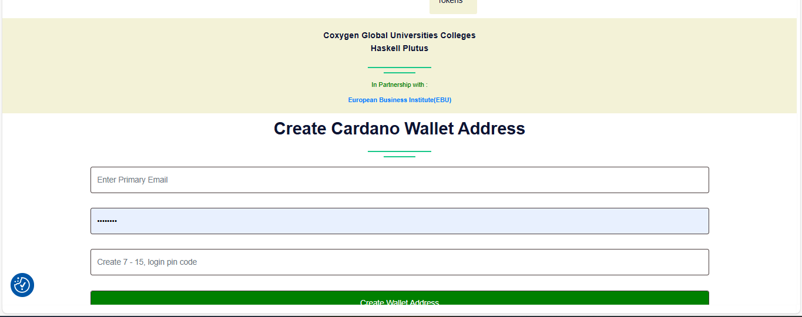

üîê Creating Your Cardano Wallet
Once you’ve completed your Email & Phone verification, the next step is to create your Cardano wallet. This wallet will store your blockchain credentials and be used for learning, certifications, and smart contract interactions.
ü™™ Why You Need a Wallet
- To receive on-chain credentials
- To interact with Cardano testnet
- To store tokens, credentials, and certificates
- To connect with dApps and smart contracts
üõ†Ô∏è How to Create Your Wallet
 We recommend using a secure, non-custodial Cardano wallet such as:
üßæ Step 1: Set a Secure Passphrase
When creating the wallet, you will be asked to set a strong passphrase to encrypt your private keys and mnemonic seed phrase.
✅ Guidelines:
- Minimum 15 characters.
- Use a mix of:
- Uppercase letters:
A–Z - Lowercase letters:
a–z - Numbers:
0–9 - Symbols:
!@#$%^&*()_+-={}[]|\:;"'<>,.?/~
- Uppercase letters:
✍️ Important: Write your passphrase down on paper and store it offline in a safe place.
❗ Never store it digitally or share it with anyone — anyone with this passphrase can access all your assets!
üîê Step 2: Create a Secure PIN Code
You will also be asked to set a PIN code for daily access to your wallet.
✅ PIN Guidelines:
- Minimum 6 digits/characters.
- Combine numbers, uppercase, lowercase, and symbols (if allowed).
- Make it different from your passphrase!
üîë Your PIN is used for signing transactions and connecting to dApps ‚Äî treat it like your bank PIN.
⚠️ Security Reminders
- Do not use the same password/passphrase and PIN.
- Do not share your mnemonic phrase (12 or 24 words) — ever.
- Do not screenshot or save passwords/mnemonics on your device or cloud.
- Always log out after using your wallet on public devices.
üì¶ What You‚Äôll Receive
After creating and securing your wallet, you’ll be able to:
- Receive test tokens or credentials for training
- Interact with smart contracts
- Participate in on-chain exercises
- Receive your certification NFTs and credentials
üí¨ Need Help?
If you need assistance setting up your wallet:
- üìß Email: admin@coxygen.co
- üì± WhatsApp: +27 73 182 0631